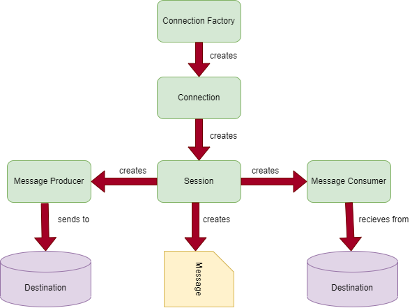
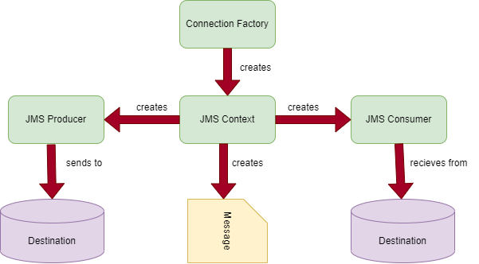

JMS Architecture
This topic provides us with the details of the structure of JMS and its
composition.
Elements of JMS
Client – The application or software that sends and
receives messages.
Messages – The information that needs to be exchanged
between the applications.
JMS Provider – A message-oriented middleware product
that implements JMS and adds other administrative functionalities.
JMS Sender – It is an application or code that
creates and sends message to the destination. Also known as JMS
Producer or Publisher.
JMS Receiver – It is the application which will
receive or consume the message the JMS sender has created and sent.
Also known as JMS Consumer or Subscriber.
JMS API
JMS has broadly offered two sets of APIs for sending and receiving
messages.
JMS 1.1 – This is also referred to as the classic
API. It offers a single set of interfaces to implement both point to
point messaging and pub/sub messaging models.
JMS 2.0 – This is also referred to as the simplified
API. It offers all the functionality of the classic API with fewer
interfaces, and it is simpler to use as the name suggests.
Note - For this tutorial we will use JMS 2.0 API for our demo and
example.
JMS 1.1 / The classic API
JMS 1.1 provides the below interfaces:
ConnectionFactory - It is used by JMS clients to
create a connection with JMS providers.
Connection - This is an active connection to JMS
provider
Session - A single threaded context for sending and
receiving messaged
MessageProducer - An object that creates and sends
the message to the JMS provider, either queue or topic.
MessageConsumer - An object that is created to
consume the message posted to the queue or topic by the producer.

JMS 2.0 / The simplified API
JMS 2.0 provides the simplified version of the interfaces provided by
the classic API:
ConnectionFactory - It is the same object as
discussed in the classic API, which is used to create a connection
with JMS provider.
JMS Context - : It is similar to session of the
classic API which is used to create a single threaded context for
sending and receiving message.
JMS Producer - This is the object which is used to
create and send messages to the JMS provider
JMS Consumer - : This is the object to consume the
message from the queue or the topic.
